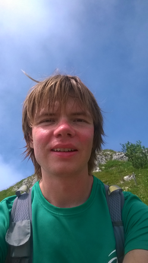

My name is Janis (Yanis) and now I am doing a PhD in TU Delft on toplogical effects in multiterminal superconducting junctions. The simplicity attracts me. I am passionatley seeking frame in which percieved complexity becomes simple. That gives me that special feeling of going up nad I do a research of getting more of it although that is never easy.
I am addicted of going up of needing less while creating more. That attracts me to the precission of mathematics which connects the world and people trying to understand it a little better making their own great stories. Also I am deeply interested in technology to figure out a way of doing more and thniking less. Rethinking until simplicity is produced. My infinite loop of enjoyment :)